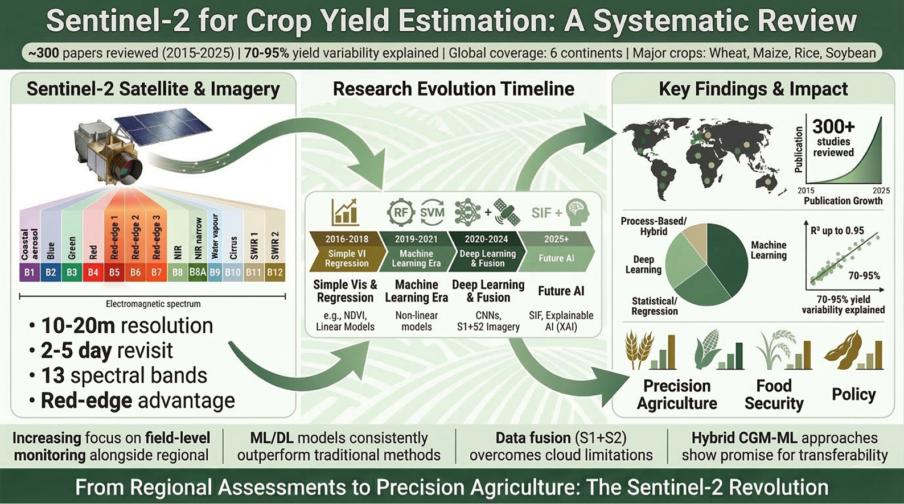
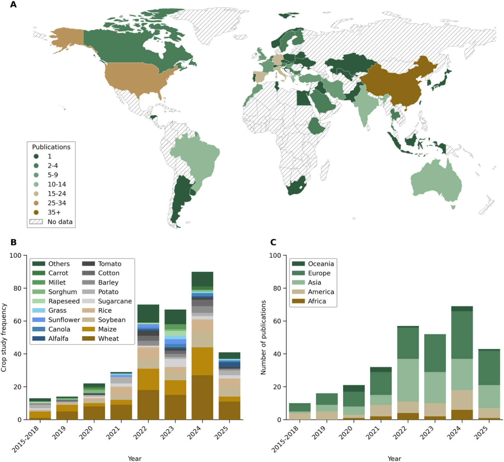
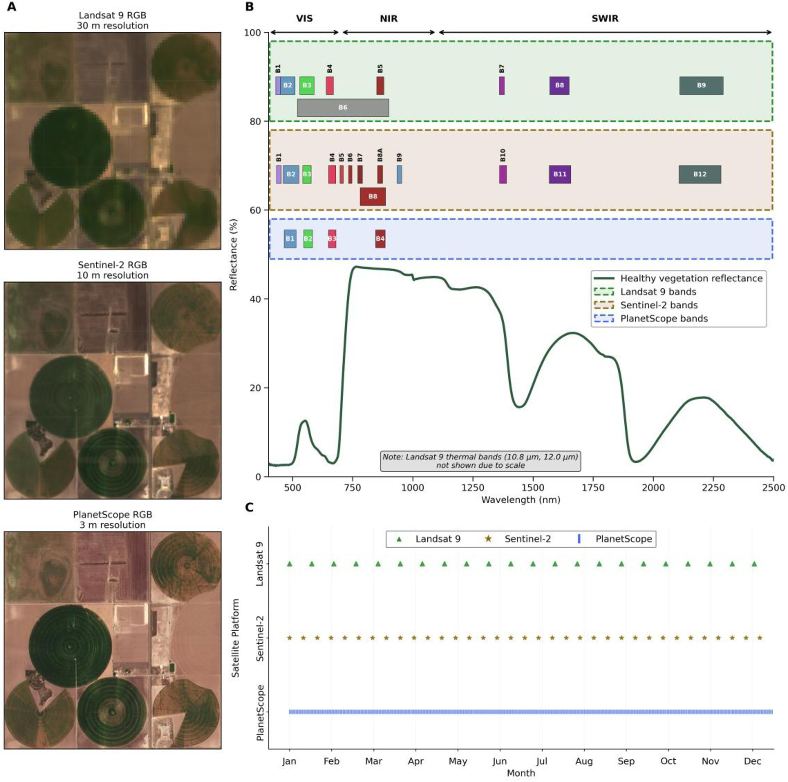
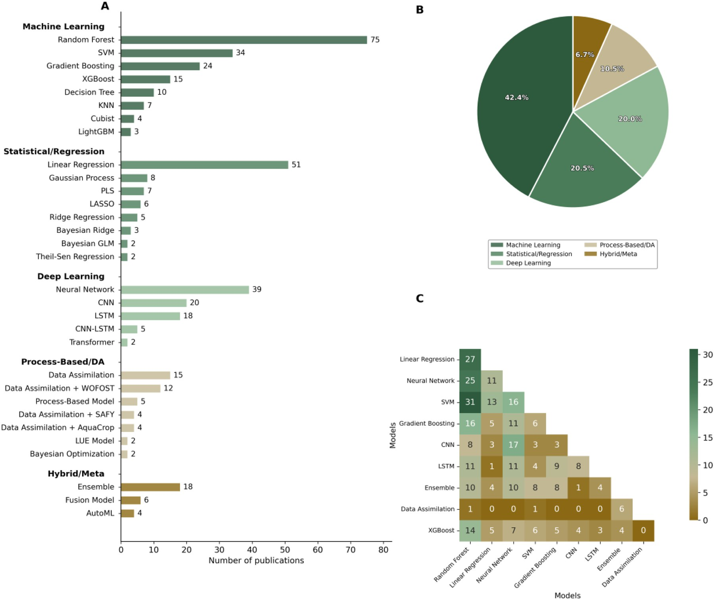
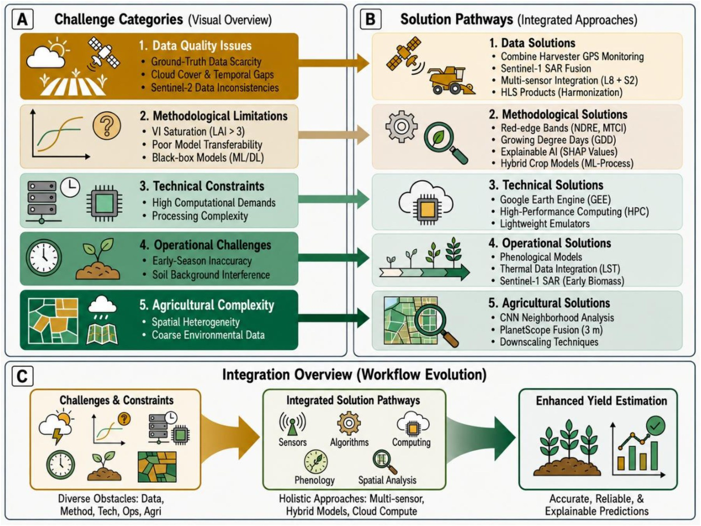
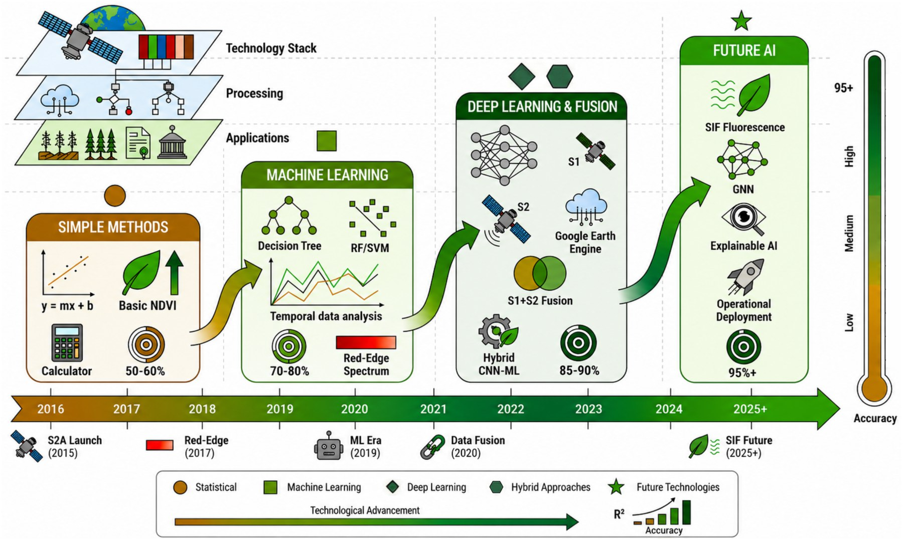

📡 Sentinel-2 for Crop Yield Estimation: A Systematic Review
Mohammadreza Narimani, Alireza Pourreza, Ali Moghimi, and Parastoo Farajpoor
Smart Agricultural Technology · Volume 14 · Article 102405 · 2026
Digital Agriculture Laboratory · Department of Biological and Agricultural Engineering · University of California, Davis
Graphical Abstract
At a glance: Sentinel-2’s field-scale optical advantage, the shift from vegetation-index regressions to machine learning, deep learning, and multi-sensor fusion, and the review’s global findings on performance and impact.

Why This Review Matters
Accurate, timely crop yield information underpins food security, agricultural policy, and farm management. Coarse sensors such as MODIS can monitor continents but blur small fields. Landsat improves spatial detail, yet its revisit and cloud sensitivity often miss key phenology. Sentinel-2 changed that balance: free 10–20 m multispectral imagery, frequent revisits, and red-edge bands that stay informative in dense canopies.
This open-access systematic review by Mohammadreza Narimani and colleagues synthesizes peer-reviewed Sentinel-2 yield studies from 2015 onward. Rather than claiming the first Sentinel-2 agriculture review, it delivers a yield-centered comparison of modeling paradigms, input data, validation practice, crop patterns, and operational bottlenecks.
A Rapidly Expanding Global Literature
Publication activity has grown sharply since the mid-2010s, with particularly strong contributions from Asia, Europe, and the Americas. Wheat, maize, rice, and soybean dominate the literature, while specialty and horticultural crops remain comparatively underrepresented—an opportunity for future field-scale work.

Why Sentinel-2 Is a Sweet Spot
Compared with Landsat 9 (≈30 m, ≈16-day revisit) and PlanetScope (≈3 m, near-daily but fewer spectral bands), Sentinel-2 sits in a practical middle ground for yield mapping: sharp enough for many field boundaries, rich enough for chlorophyll-sensitive red-edge indices such as NDRE and MTCI, and frequent enough to track canopy development through the season.

Three Modeling Paradigms
1. Empirical ML / Deep Learning
Vegetation indices and spectral time series feed Random Forest, SVM, gradient boosting, CNNs, LSTMs, and related models that capture nonlinear spectral–yield relationships.
2. Crop-Growth Data Assimilation
Sentinel-2 biophysical variables—especially LAI—constrain process models such as WOFOST, SAFY, APSIM, and CERES-Wheat for physiologically grounded forecasts.
3. Multi-Sensor Fusion
Sentinel-1 SAR fills optical cloud gaps; weather, soil, and topography further explain within-field yield variability when fused with Sentinel-2 features.
Across the reviewed literature, machine learning is the most common family, with Random Forest appearing most frequently, followed by classical regression and a rapidly growing deep-learning share. Process-based assimilation and hybrid/ensemble designs remain smaller but strategically important for transferability and physical consistency.

Challenges and Practical Solutions
Even strong Sentinel-2 frameworks struggle with scarce ground-truth yields, cloud gaps, VI saturation in dense canopies, weak cross-region transfer, high compute cost, and early-season soil background. The review pairs each bottleneck with actionable pathways: harvester GPS yields, Sentinel-1 fusion, red-edge indices, explainable AI (e.g., SHAP), Google Earth Engine / HPC workflows, phenology-aware timing, and higher-resolution optical fusion where needed.

From NDVI Regressions to Next-Generation AI
Methodologically, the field has moved from simple vegetation-index regressions toward machine learning, then deep learning and multi-sensor fusion, and now toward knowledge-guided models, foundation-model pre-training, explainable AI, and operational deployment. The trajectory is clear: higher skill is possible, but only when models are paired with better labels, uncertainty reporting, and transferable designs.

Paper and Citation
Narimani, M., Pourreza, A., Moghimi, A., & Farajpoor, P. (2026). Sentinel-2 for crop yield estimation: A systematic review. Smart Agricultural Technology, 14, 102405.
DOI: 10.1016/j.atech.2026.102405 · Open access under CC BY 4.0
Contact
Mohammadreza Narimani
PhD Candidate, University of California, Davis